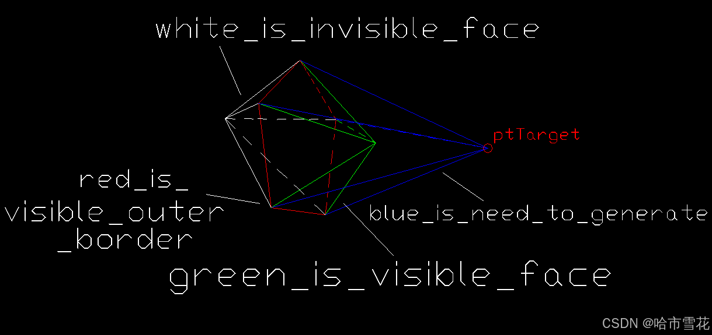
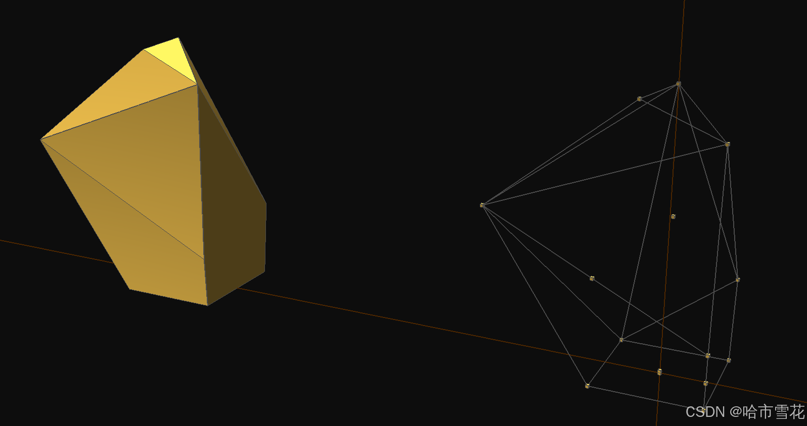
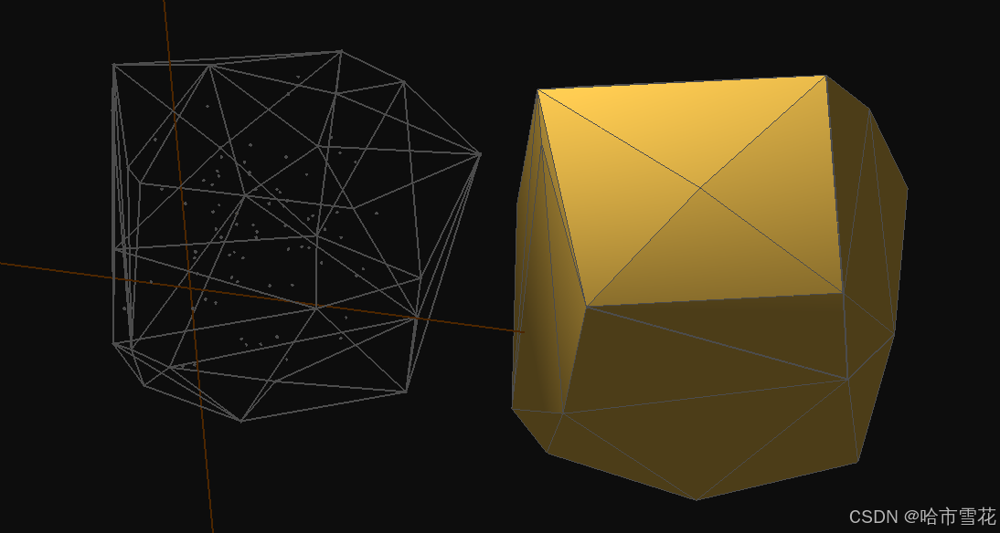

1. 前言
凸包是基础几何算法工具函数，一些场景需要计算并显示凸包，或使用凸包以加速计算。计算三维凸包有多种方法，如增量构建、分治法等，博主采用增量构建方法计算凸包。
有关二维凸包的计算请参考博主此前文章（已经是5年多以前的文章了，时光荏苒......）
2. 内容
2.1 性质
三维凸包有如下几个重要性质：
- 都是凸角点，没有凹角，也没有平角（顶点处于平面上时所形成的角点）；
- 凸包上的任何面均为凸轮廓；
- 凸包对任意方向的投影均为凸轮廓；
上述性质在计算凸包时会用到，
2.2 算法思路
采用增量法构建三维凸包的思路是递推法，构建有效初始凸包（面–>棱锥体），然后再根据点集中的点逐步更新当前凸包，最后得到结果。
- 输入为点集
lstVerts；- 初始化：构建第一个有效面，通常为三角面，从点集中选取不共线的3个点构建三角面；初始化失败，则返回
false；初始化成功则继续；- 遍历点集中的点
ptTarget，尝试构建第一个实体，为三棱锥或N棱锥；
- 如果
ptTarget与此前三角面共面，则，求二维凸包，并更新为此前面；- 如果
ptTarget与此前面不共面，则构建第一个棱锥实体；- 继续遍历点集得到
ptTarget，用ptTarget去更新此前得到的凸包实体，得到新的凸包实体；
- 凸包实体中的一些面对
ptTarget是可见的，对于可见面求其外围闭合边缘（见下图），闭合边缘上的每一条边与ptTarget构造三角形，加入到凸包实体中；
- 注意可见面分为两种类型：“完全可见面” 和 “边缘可见面”，对于后者，点与其共面，需要求（
ptTarget和当前面的）二维凸包并构造新的面加入到当前凸包实体中；- 将所有可见面从凸包实体中删除；
- 不可见面则不动；
- 得到凸包实体
3DConvexHull；算法结束；

3. 代码
bool GeometryUtils::Cal3DConvexHull(const list<Vector3f>& lstVertex, Body& convexHull)
{
// 增量构建
Face first;
if (!ConstructFirstFace(lstVertex, first))
return false;
convexHull.lstFace.push_back(first);
//++itrItem;
auto itrItem = lstVertex.begin();
for (;itrItem != lstVertex.end(); ++itrItem)
{
UpdateConvexHull(*itrItem, convexHull);
}
}
4. 效果


5. 写在后面
图形几何、数据处理、并行计算相关研究和研发，公众号：geometrylib，欢迎交流。
————————————————哈市雪花————————————————